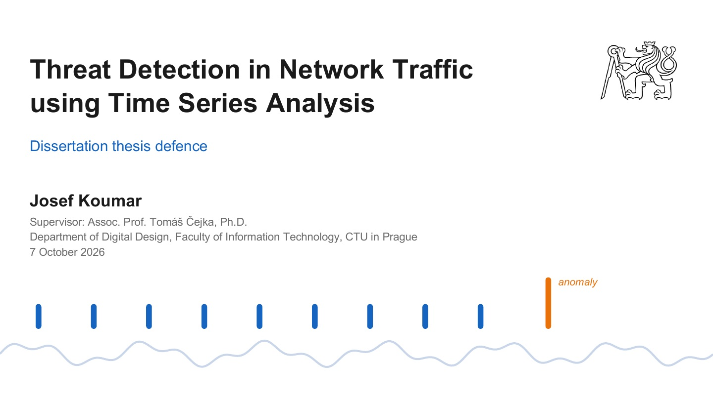

Doctoral dissertation · defended 7 October 2026
Threat Detection in Network Traffic using Time Series Analysis
Dissertation thesis submitted to the Faculty of Information Technology, Czech Technical University in Prague, in the doctoral study programme Informatics. Supervised by Assoc. Prof. Tomáš Čejka, Ph.D., Department of Digital Design.
Abstract
This dissertation thesis deals with the advancement of network threat detection methodologies through the application of systematic time series analysis. As modern network security faces a critical visibility gap due to the near-universal adoption of encryption, traditional payload-based inspection has become largely ineffective. This research addresses this challenge by defining a taxonomy for network-derived time series to model behavioral and temporal dependencies inherent in encrypted traffic. By treating network metadata as temporal signals, the dissertation thesis develops novel detection mechanisms for identifying malicious activity, ranging from botnet Command and Control (C&C) channels to sophisticated data exfiltration and Distributed Denial of Service (DDoS) attacks, without requiring access to unencrypted payloads.
Main contributions
- Formalization of a taxonomy for network time series that enables the granular analysis of temporal patterns for precise threat characterization.
- Development of threat detection methodologies for encrypted traffic by analyzing the Single flow time series.
- Design of specialized periodicity mining algorithms for Flow time series to expose automated heartbeat patterns and periodic behaviors characteristic of malware and botnet communications.
- Application of unsupervised forecasting-based methods for outlier detection, targeting network intrusions that deviate from established historical traffic baselines.
- Proposed integration of Large Language Models (LLM) to automate the explanation of detected anomalies to get insights for human analysts.

- AuthorIng. Josef Koumar
- SupervisorAssoc. Prof. Tomáš Čejka, Ph.D.
- InstitutionFaculty of Information Technology, Czech Technical University in Prague
- DepartmentDepartment of Digital Design
- ProgrammeInformatics (doctoral), 2022 — 2026
- SubmittedJanuary 2026
- Defended7 October 2026
- Extent156 pages, 7 chapters
- PapersBuilt on 9 peer-reviewed papers (TMA, CNSM, NOMS, Computer Networks, Nature Scientific Data) — see publications
Structure of the thesis
The work is organised around three types of time series derived from network traffic, each with its own detection methods and deployment tier.
-
Single flow time series
Time series features computed inside the flow exporter — the NetTiSA flow — for encrypted traffic classification at line rate with a 113-byte flow record. In production in the CESNET2 network.
-
Flow time series
Periodicity mining with the Lomb-Scargle periodogram over unevenly spaced flow series, applied to traffic classification, cryptomining detection and botnet command-and-control detection.
-
Aggregated time series
The CESNET-TimeSeries24 dataset, SARIMA forecasting, the NODS outlier detection system deployed in the CESNET3 network, and LLM-based explanation of detected anomalies for analysts.
Reviewers' reports
Three independent reviewers assessed the dissertation before the defence. All three recommended it for defence; their full reports are available below.
-
Prof. Ramin Sadre
Université catholique de Louvain (UCLouvain), Belgium
“This dissertation presents a coherent body of research that makes meaningful advances in network threat detection. The contributions are technically sound, practically oriented, and supported by experimental evaluation on real-world datasets.”
-
Dr. Pál Varga
Department of Telecommunications and Artificial Intelligence, Budapest University of Technology and Economics, Hungary
“In my judgment, it meets the standard expected of doctoral work and, in several respects, exceeds it through its openness, practical validation, and clear relevance to encrypted-traffic security monitoring.”
-
Dr. Roberto Magán Carrión
Associate Professor, University of Granada, Spain
“This dissertation is a top-tier academic work that successfully bridges mathematical time-series theory with the pragmatic engineering requirements of high-speed network security.”